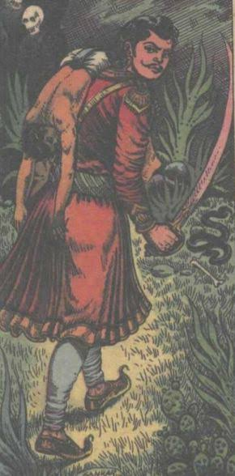

સખત મહેનત પછી, રાજા વિક્રમાદિત્યએ ફરી એકવાર બેતાલ પર કબજો કર્યો.
તે તેને પોતાના ખભા પર બેસાડી સ્મશાન તરફ લઈ ગયો. રસ્તામાં બેતાલે રાજાને નવી વાર્તા શરૂ કરી અને બેતાલે કહ્યું...
એક સમયે કાશીમાં એક રાજા હતો, જેનું નામ પ્રતાપ મુકુટ હતું.
તેને એક બાળક હતું, જેનું નામ વજ્રમુકુટ હતું. એક દિવસ વજ્રમુકુટ દિવાનના પુત્ર સાથે શિકાર માટે જંગલમાં ગયો.
ઘણું ભટક્યા પછી બંનેએ એક તળાવ જોયું જેમાં કમળ ખીલે છે અને હંસ ઉડી રહ્યા હતા. બંને મિત્રો ત્યાં રોકાયા,
તળાવના પાણીથી હાથ અને મોં ધોયા અને નજીકના મહાદેવ મંદિરે દર્શન કરવા ગયા. બંનેએ મંદિરની બહાર પોતાના ઘોડા બાંધ્યા.
ત્યારબાદ બંને મિત્રો દર્શન કરીને મંદિરની બહાર આવ્યા ત્યારે જોયું કે એક રાજકુમારી તેના મિત્રો સાથે તળાવમાં સ્નાન કરવા આવી હતી.
રાજકુમારીને જોઈને રાજકુમાર ખૂબ જ ખુશ થયો. રાજકુમાર અને રાજકુમારી બંને એકબીજાથી મંત્રમુગ્ધ હતા,
જ્યારે દીવાનનો પુત્ર ત્યાં એક ઝાડ નીચે આરામ કરતો હતો. રાજકુમારીએ રાજકુમારને જોયો કે તરત જ તેણે તેના વાળમાંથી કમળનું ફૂલ કાઢ્યું,
તેને તેના કાનમાં મૂક્યું, તેને તેના દાંત વડે કરડ્યું, તેને તેના પગ નીચે દબાવ્યું અને પછી તેને તેની છાતી પર ગળે લગાવ્યું અને તેના મિત્રો સાથે ચાલી ગઈ.
તેણીના ગયા પછી રાજકુમાર ખૂબ જ દુઃખી થયો અને તેના મિત્ર પાસે પાછો ગયો અને આખી વાત કહી.
રાજકુમારે કહ્યું, “હું રાજકુમારી વિના જીવી શકતો નથી, પરંતુ હું આ રાજકુમારી વિશે કંઈ જાણતો નથી.
તે ક્યાં રહે છે, તેનું નામ શું છે?”
દિવાનના પુત્રએ બધું સાંભળ્યું અને રાજકુમારને સાંત્વના આપી અને કહ્યું,
“રાજકુમાર, ડરશો નહીં. રાજકુમારીએ બધું કહી દીધું. રાજકુમારે આશ્ચર્યચકિત થઈને પૂછ્યું, "તે કેવી રીતે?"
દિવાનના પુત્રએ રાજકુમારને કહેવાનું શરૂ કર્યું કે રાજકુમારીએ તેના વાળમાંથી કમળનું ફૂલ કાઢીને તેના કાનમાં નાખ્યું,
એટલે કે રાજકુમારીએ કહ્યું કે તે કર્ણાટકની છે. ફૂલને દાંત વડે કરડવું એટલે કે તેના પિતાનું નામ દંતવત છે.
ફૂલને તમારા પગથી દબાવવાનો અર્થ એ થયો કે રાજકુમારીનું નામ પદ્માવતી હતું અને ફૂલને તમારી છાતી પાસે રાખવાનો અર્થ એ થયો કે તમે હવે તેના હૃદયમાં વસી ગયા છો.
આ બધું સાંભળીને રાજકુમાર ખૂબ ખુશ થઈ ગયો.
રાજકુમારે ખુશ થઈને દિવાનના પુત્રને કહ્યું કે મારે કર્ણાટક જવું છે, મને ત્યાં લઈ જાઓ.
બંને મિત્રો ઘણા દિવસો સુધી ભટક્યા અને કર્ણાટક પહોંચ્યા. જ્યારે તેઓ બંને મહેલની નજીક પહોંચ્યા,
ત્યારે તેઓએ એક વૃદ્ધ મહિલાને ચરખો કાંતતી જોઈ.
સ્ત્રીને જોતાંની સાથે જ બંને ઘોડા પરથી ઉતર્યા અને તેની પાસે ગયા અને કહ્યું,
“મા, અમે બંને વેપારી છીએ, અમે ઘણા દૂરથી આવ્યા છીએ. અમારો સામાન હજી આવ્યો નથી,
અમારો સામાન પણ થોડા દિવસોમાં પહોંચી જશે. અમને બંનેને રહેવા માટે થોડી જગ્યા જોઈએ છે.”
તેમની વાત સાંભળીને વૃદ્ધ સ્ત્રીનો સ્નેહ જાગ્યો અને તેણે કહ્યું, “દીકરા, આને તારું ઘર સમજ. તમે ઈચ્છો ત્યાં સુધી અહીં રહી શકો છો.” આ પછી બંને તેના ઘરે રહેવા લાગ્યા.
દરમિયાન દિવાનના પુત્રએ મહિલાને પૂછ્યું કે, મા, તમે શું કામ કરો છો? તમારી જગ્યાએ કોણ રહે છે? તમે કેવી રીતે આજીવિકા કરો છો?"
 મહિલાએ ધીમે ધીમે આ બધા પ્રશ્નોના જવાબ આપવાનું શરૂ કર્યું. તેણે કહ્યું, “મારો એક પુત્ર છે જે રાજા માટે કામ કરે છે.
હું રાજાની પુત્રી પદ્માવતીની દાસી હતી. હું વૃદ્ધ થઈ ગયો છું, તેથી હું ઘરે જ રહું છું.
રાજા અમને ભોજન આપે છે અને હું દિવસમાં એકવાર રાજકુમારીને મળવા જાઉં છું."
મહિલાએ ધીમે ધીમે આ બધા પ્રશ્નોના જવાબ આપવાનું શરૂ કર્યું. તેણે કહ્યું, “મારો એક પુત્ર છે જે રાજા માટે કામ કરે છે.
હું રાજાની પુત્રી પદ્માવતીની દાસી હતી. હું વૃદ્ધ થઈ ગયો છું, તેથી હું ઘરે જ રહું છું.
રાજા અમને ભોજન આપે છે અને હું દિવસમાં એકવાર રાજકુમારીને મળવા જાઉં છું."
આ સાંભળીને રાજકુમારે વૃદ્ધ મહિલાને થોડા પૈસા આપ્યા અને તેને રાજકુમારીને સંદેશો પહોંચાડવા કહ્યું.
રાજકુમારે વૃદ્ધ સ્ત્રીને કહ્યું, "મા, આવતીકાલે જ્યારે તમે રાજકુમારી પાસે જશો,
ત્યારે તેને કહેજો કે જે રાજકુમાર તને જેઠ સુદી પંચમીના રોજ નદી પાસે મળ્યો છે તે તમારા રાજ્યમાં આવ્યો છે."
બીજા દિવસે વૃદ્ધ સ્ત્રી રાજકુમારનો સંદેશો લઈને રાજકુમારી પાસે ગઈ. તે સ્ત્રીની વાત સાંભળીને રાજકુમારી ગુસ્સે થઈ ગઈ.
તેણે પોતાના હાથ પર ચંદન લગાવ્યું અને મહિલાના ગાલ પર થપ્પડ મારીને કહ્યું કે મારા ઘરની બહાર નીકળી જાવ.
વૃદ્ધ સ્ત્રી ઘરે પરત ફરી અને રાજકુમારને બધું કહ્યું. સ્ત્રીની વાત સાંભળીને રાજકુમાર ચોંકી ગયો. પછી રાજકુમારના મિત્રએ રાજકુમારને આશ્વાસન આપતા કહ્યું,
"રાજકુમાર, ચિંતા કરશો નહીં. રાજકુમારીની વાત સમજવાનો પ્રયાસ કરો. નોંધ લો કે રાજકુમારીએ સફેદ ચંદનમાં તેની આંગળીઓ બોળીને તેના ગાલ પર માર્યો છે.
આનો અર્થ એ કે હજુ થોડા દિવસો બાકી છે. ચાંદની."તેઓ સમાપ્ત થયા પછી હું તમને અંધારી રાત્રે મળીશ."
થોડા દિવસો પછી, વૃદ્ધ સ્ત્રી ફરી એક સંદેશ લઈને રાજકુમારી પાસે પહોંચી.
આ વખતે રાજકુમારીએ કેસરી રંગમાં ત્રણ આંગળીઓ ડુબાડીને વૃદ્ધ મહિલાના ચહેરા પર માર્યો અને કહ્યું,
"અહીંથી ભાગી જા." પછી સ્ત્રીએ આવીને રાજકુમારને બધું કહ્યું. આ સાંભળીને રાજકુમાર ખૂબ જ દુઃખી થયો.
આના પર દિવાનના દીકરાએ રાજકુમારને કહ્યું, “રાજકુમાર, એમાં દુઃખી થવા જેવું કંઈ નથી.
રાજકુમારીએ કહ્યું છે કે તે અત્યારે તબિયત સારી નથી તેથી વધુ ત્રણ દિવસ રાહ જુઓ.
ત્રણ દિવસ પછી વૃદ્ધ સ્ત્રી ફરીથી રાજકુમારી પાસે ગઈ.
આ વખતે ફરીથી રાજકુમારીએ મહિલાને ઠપકો આપ્યો અને તેને પશ્ચિમની બારીમાંથી બહાર જવા કહ્યું. સ્ત્રી ફરી રાજકુમાર પાસે ગઈ અને આખી વાત કહી.
પછી દિવાનના પુત્રએ રાજકુમારને સમજાવ્યું અને કહ્યું કે તેના મિત્ર રાજકુમારીએ તેને તે બારી તરફ બોલાવ્યો છે.
આ સાંભળીને રાજકુમાર આનંદથી ઉછળી પડ્યો. તેણે વૃદ્ધ મહિલાના કપડાં પહેરીને, પરફ્યુમ લગાવીને,
તેના હથિયારો પેક કરીને અને રાજકુમારીને મળવા નીકળ્યો. રાજકુમાર મહેલમાં પહોંચ્યો અને બારીમાંથી રાજકુમારીના રૂમમાં પહોંચ્યો.
રાજકુમારી ત્યાં તૈયાર થઈને રાજકુમારની રાહ જોઈ રહી હતી. રાજકુમાર ઓરડામાં પ્રવેશતાની સાથે જ તેની આંખો પહોળી રહી ગઈ.
રાજકુમારીના રૂમમાં ઘણી મોંઘી વસ્તુઓ રાખવામાં આવી હતી. રાજકુમાર અને રાજકુમારી આખી રાત સાથે રહ્યા.
પછી દિવસ આવતાની સાથે જ રાજકુમારીએ રાજકુમારને બધાથી છુપાવી દીધો. જ્યારે રાત પડવા લાગી, ત્યારે રાજકુમાર બહાર આવતો.
આમ કરતા ઘણા દિવસો વીતી ગયા. પછી અચાનક રાજકુમારને તેનો મિત્ર યાદ આવ્યો.
રાજકુમારને તેના મિત્રની ચિંતા હતી કારણ કે તે જાણતો ન હતો કે તેનો મિત્ર ક્યાં હશે, તે કેવો હશે અને તેની સ્થિતિ શું હશે.

રાજકુમારને ઉદાસ જોઈને રાજકુમારીએ તેના ઉદાસીનું કારણ પૂછ્યું.
તે પછી રાજકુમારે રાજકુમારીને તેના મિત્ર વિશે જણાવ્યું. રાજકુમારે કહ્યું,
“તે મારો ખૂબ જ સારો અને હોંશિયાર મિત્ર છે. તેના કારણે જ હું તમને મળી શક્યો છું.”
આ સાંભળીને રાજકુમારીએ રાજકુમારને કહ્યું, “હું તમારા મિત્ર માટે સ્વાદિષ્ટ ભોજન બનાવીશ. તમે તેને ખવડાવીને અને સમજાવીને પાછા આવો.”
પછી રાજકુમાર ભોજન લઈને તેના મિત્ર પાસે પહોંચ્યો. બંને મિત્રો લગભગ ઘણા મહિનાઓથી મળ્યા ન હતા.
મળ્યા પછી રાજકુમારે તેના મિત્રને બધું કહ્યું. રાજકુમારે કહ્યું, “મેં રાજકુમારીને તારી ચતુરાઈ વિશે કહ્યું. રાજકુમારીએ તમારા માટે ભોજન મોકલ્યું છે.”
આ બધું સાંભળીને દિવાનનો દીકરો વિચારમાં પડી ગયો. તેણે રાજકુમારને કહ્યું કે તમે આ બરાબર કર્યું નથી.
રાજકુમારી સમજી ગઈ છે કે જ્યાં સુધી હું તમારી સાથે છું, ત્યાં સુધી તે તમને તેના નિયંત્રણમાં રાખી શકશે નહીં. તેથી, તેઓએ આ ખોરાકમાં ઝેર મોકલ્યું છે.
આટલું બોલતાની સાથે જ દીવાનના દીકરાએ તે ભોજનમાંથી એક લાડુ લીધો અને સામે બેઠેલા કૂતરાને આપ્યો.
લાડુ ખાધા પછી કૂતરો મૃત્યુ પામ્યો. આ જોઈને રાજકુમારને ખૂબ જ ખરાબ લાગ્યું. તેણે કહ્યું કે ભગવાન આવી સ્ત્રીથી આપણી રક્ષા કરે.
હવે હું એ રાજકુમારી પાસે નહિ જાઉં.
દિવાનના પુત્રએ રાજકુમારને કહ્યું, "ના, હવે આપણે કોઈ યુક્તિ શોધી કાઢવી જોઈએ જેથી કરીને આપણે તેને અમારા ઘરે લઈ જઈ શકીએ."
આજે રાત્રે તમે ત્યાં જાઓ અને જ્યારે રાજકુમારી સૂતી હોય, ત્યારે તેની ડાબી જાંઘ પર ત્રિશૂળનું નિશાન બનાવો. પછી તેના ઘરેણાં લઈ આવો.
રાજકુમારે તેના મિત્રની વાત સાંભળી અને તેણે કહ્યું તેમ કર્યું. પછી દિવાનના પુત્રએ યોગીનો વેશ ધારણ કર્યો.
તેણે રાજકુમારને આ ઝવેરાત બજારમાં વેચવા કહ્યું. જો કોઈ તેને પકડે તો તેને કહો કે મારા ગુરુ પાસે જાઓ અને તેને મારી પાસે લાવો.
રાજકુમાર ઝવેરાતને મહેલની નજીક એક સુવર્ણકાર પાસે લઈ ગયો. સુવર્ણકારે દાગીના જોતાની સાથે જ ઓળખી લીધા અને રાજકુમારને પોલીસ સ્ટેશન લઈ ગયા.
જ્યારે કોટવાલે રાજકુમારને પ્રશ્નો પૂછ્યા ત્યારે રાજકુમારે કહ્યું, “મારા ગુરુજીએ મને આ ઝવેરાત આપ્યા છે.
આ સાંભળીને કોટવાલ ગુરુ એટલે કે દિવાનના પુત્રને પણ પકડીને રાજાના દરબારમાં લઈ ગયો.
રાજાએ પૂછ્યું, "યોગી મહારાજ, તમે આ કિંમતી ઝવેરાત ક્યાંથી લાવ્યા?"
દિવાનના પુત્રે, યોગીનો વેશ ધારણ કરીને કહ્યું, “મહારાજા, કાલી ચૌદસના દિવસે હું સ્મશાનમાં ડાકિની મંત્રનો ગ્રહણ કરી રહ્યો હતો ત્યારે ડાકિની મારી સામે આવી.
મેં તેના ઘરેણાં ઉતાર્યા અને તેની ડાબી જાંઘ પર ત્રિશૂળનું નિશાન બનાવ્યું.”
આ સાંભળીને રાજા મહેલમાં ગયા અને રાણીને પદ્માવતીની ડાબી જાંઘ તપાસવા કહ્યું કે રાજકુમારીની જાંઘ પર ત્રિશૂળની છાપ છે કે નહીં.
રાજાની વાત સાંભળતા જ રાણીએ જોયું કે રાજકુમારીની ડાબી જાંઘ પર ખરેખર ત્રિશૂળનું નિશાન હતું. આ જાણીને રાજા ખૂબ જ દુઃખી થયા.
ત્યારે રાજા યોગીની પાસે ગયા અને કહ્યું, યોગી, મને કહો કે શાસ્ત્રોમાં ખરાબ સ્ત્રીઓની શું સજા છે?
યોગીએ જવાબ આપ્યો - જો કોઈ બ્રાહ્મણ, કોઈ રાજા, કોઈ ગાય, સ્ત્રી, કોઈ પુરુષ અથવા તેના રાજ્યમાં રહેનાર કોઈ પણ વ્યક્તિ કોઈ ખરાબ કામ કરે છે,
તો તેને રાજ્યમાંથી બહાર ફેંકી દેવો જોઈએ. આ સાંભળીને રાજાએ પદ્માવતીને જંગલમાં મોકલી દીધી. રાજકુમાર અને દિવાનનો દીકરો તકની રાહ જોતા ત્યાં બેઠા હતા.
રાજકુમારીને એકલી શોધીને બંને તેને પોતાના શહેરમાં લઈ આવ્યા અને સુખેથી રહેવા લાગ્યા.
વાર્તા પૂરી થઈ અને દર વખતની જેમ બેતાલે ફરી એકવાર વિક્રમને પૂછ્યું,
“તો રાજન, મને કહો કે આ વાર્તામાં પાપી કોણ છે? "મને જલ્દી કહો રાજન, નહીં તો હું તારા માથાના ટુકડા કરી નાખીશ."
વિક્રમે જવાબ આપ્યો, “રાજા પાપી હતા કારણ કે દિવાનના પુત્રએ તેના માલિકનું કામ કર્યું હતું.
રાજાએ જે કહ્યું તે કોટવાલે સાંભળ્યું અને રાજકુમારે તેની ઇચ્છા પૂરી કરી, પરંતુ આ વાર્તામાં રાજા પાપી હતો.
વિચાર કર્યા વિના, તેણે રાજકુમારીને રાજ્યની બહાર ફેંકી દીધી. વિક્રમે આટલું કહેતાં જ બેતાલ ફરી ઊડીને ઝાડ પર લટકી ગઈ.
સારાંશ :
નિર્ણયો હંમેશા બુદ્ધિમત્તાનો ઉપયોગ કરીને લેવા જોઈએ, નહીં તો કોઈ પણ તમને મૂંઝવણમાં મૂકીને કંઈપણ કરી શકે છે